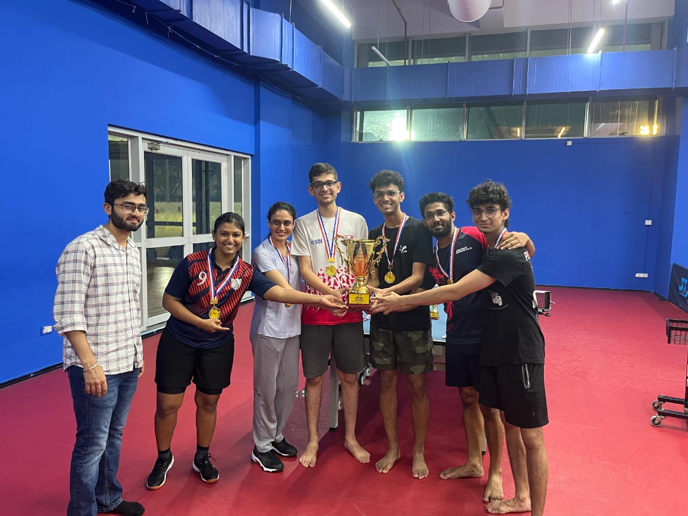
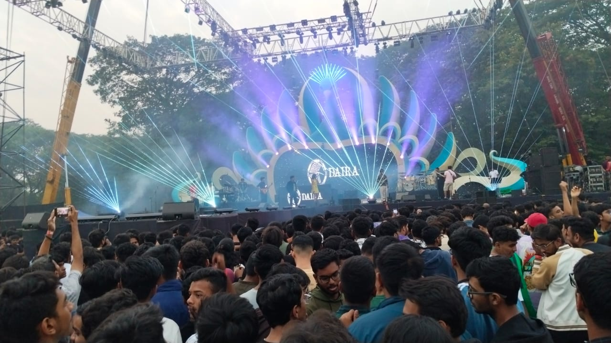
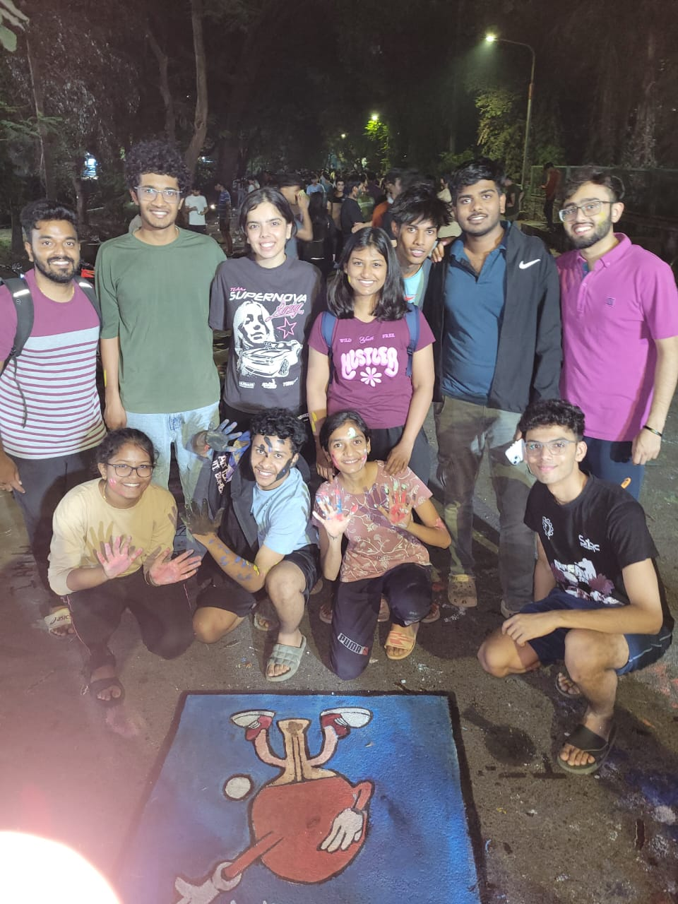
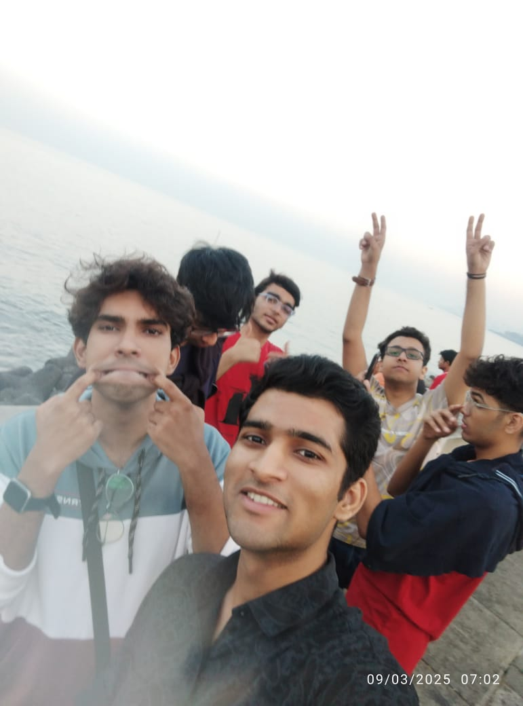

Introduction
Hi! I'm Sahil, a student at IIT Bombay, currently pursuing my
undergraduate studies. My journey here has been filled with curiosity,
growth, and unforgettable memories. From the initial days of navigating
campus life to making lasting friendships, every moment has contributed
to shaping who I am today.
Timeline & Milestones
-
Day 1 at IITB: Orientation and first hostel room
setup — a new chapter began!
-
Semester 1: Adjusting to the academic pace, bonding
with wingmates, and exploring the campus.
-
Techfest/Cultural Fests: Volunteering and attending
events that made campus life vibrant.
-
First Hackathon: Participated in a 24-hour coding
challenge — lots of learning, little sleep!
-
Internship Opportunity: Got selected for a research
internship — applying theory to real-world problems.
-
Second Year: Took on leadership roles and started
focusing more on projects and skill-building.
Learnings & Growth
Over the semesters, I’ve gained strong foundations in programming, data
structures, and mathematical thinking. I’ve explored new areas like
machine learning, web development, and data science through coursework
and side projects.
-
Skills gained: Python, C++, HTML/CSS/JS, Git, Machine
Learning
-
Favorite courses: Data Structures, Probability &
Stats, Linear Algebra
-
Clubs joined: Tech teams and coding clubs helped me
connect with like-minded peers
Photo Gallery
Here are some snapshots from my IITB life — fests, friends, hostel
moments, and more!




Quick Quiz: What's your IITB vibe?
Pick an option and we'll guess your campus personality: